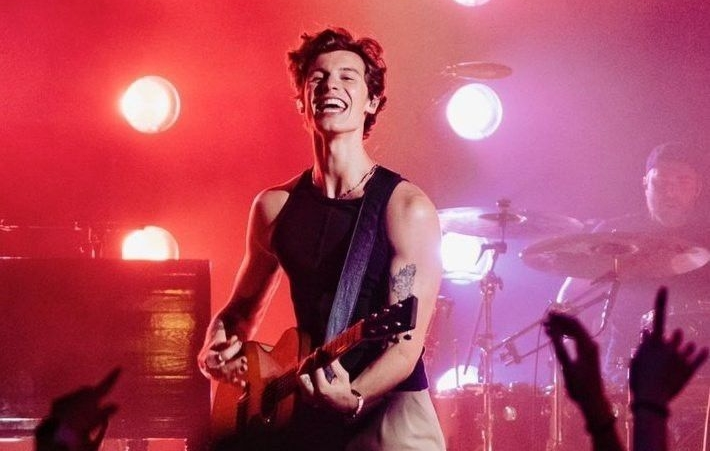

GRAMMY nominated, multi-platinum singer/songwriter Shawn Mendes announces his 2022 “Wonder: The World Tour” today, which will include 64 arena dates spanning across North America, the UK and Europe.
The tour announce follows Shawn's most recent album Wonder-which debuted at #1 on the Billboard Top 200, making Mendes one of three male artists ever to score four #1 albums by 22 years old-as well as his new hit single, “Summer of Love” with Tainy.
Starting in June 2022, Shawn is hitting a ton of different cities in the U.S. from St. Paul, Minnesota to Orlando, Florida. He shared the official tour dates on Instagram in December 2021, which revealed that he'll be joined by special guests Dermot Kennedy and Tate McRae.
As for the European leg of the tour, Shawn's good friend King Princess will be joining him across the pond. Starting in May 2023, they'll be playing cities like Bologna, Barcelona, and Manchester.
His tour is actually changing the game when it comes to reducing our carbon
footprint (more on that here). In a statement released on April 29, Shawn revealed that he and his team are doing their part in taking specific measures to ensure the tour is sustainable. According to a report by Billboard, his tour will reduce its per-show carbon footprint "by implementing
simple but effective practices that can be done by both fans and tour crew."
"No plan is perfect, but we see this as a starting point," Shawn said in his statement. "We are in a pivotal moment for climate, and it's crucial to me that this tour is a step in the right direction."
The tour has a goal to reduce emissions and in order to do so, they're offering merchandise with sustainable fabrics and fewer dyes and using energy-efficient lighting and power for the show. When traveling from show to show, the crew's opting for sustainable fuel options and will also be eating food that's sourced from local farms. Any extra food will be composted or donated to the appropriate organizations. You can also check more information through the official Wonder: The World Tour website.